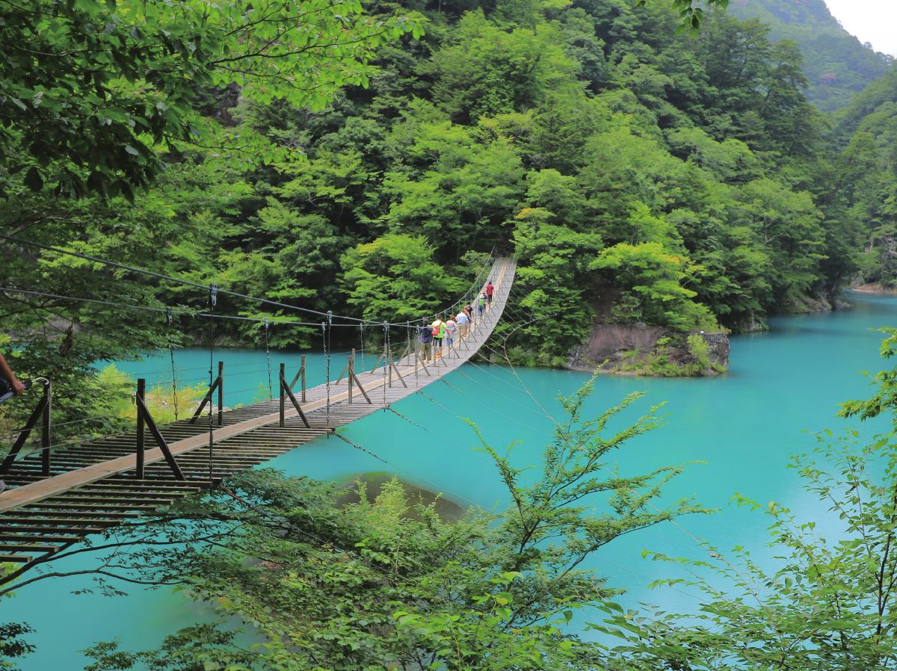
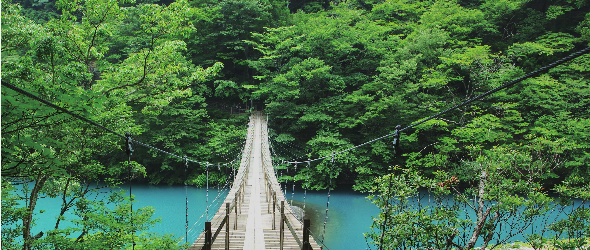
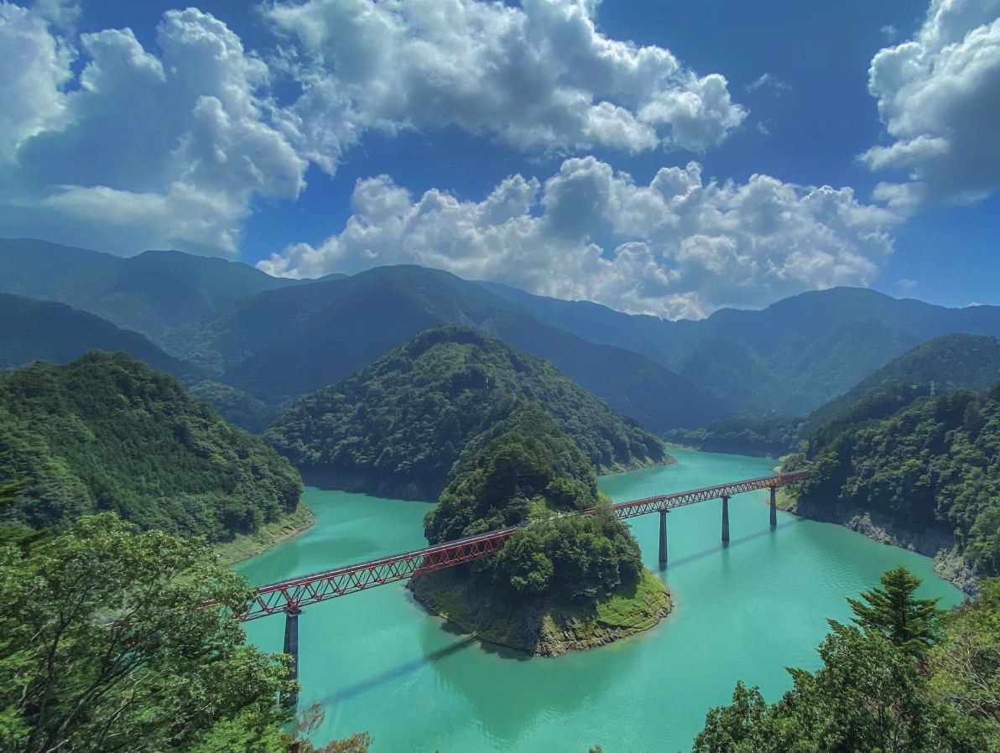
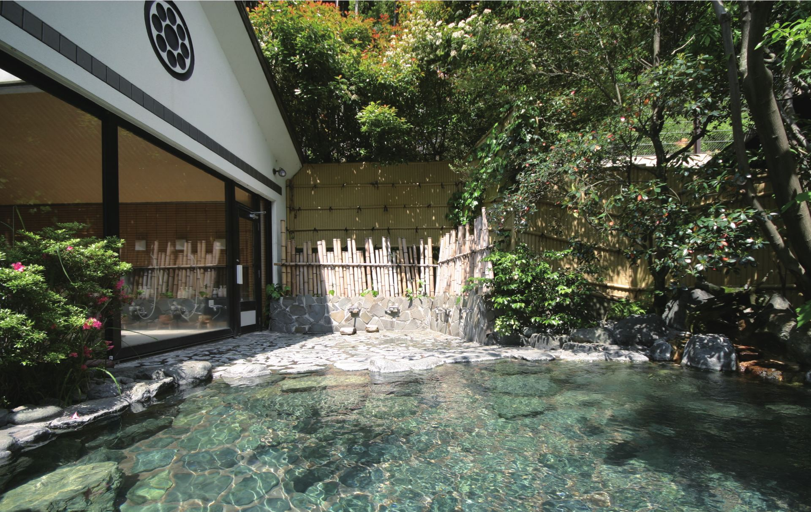
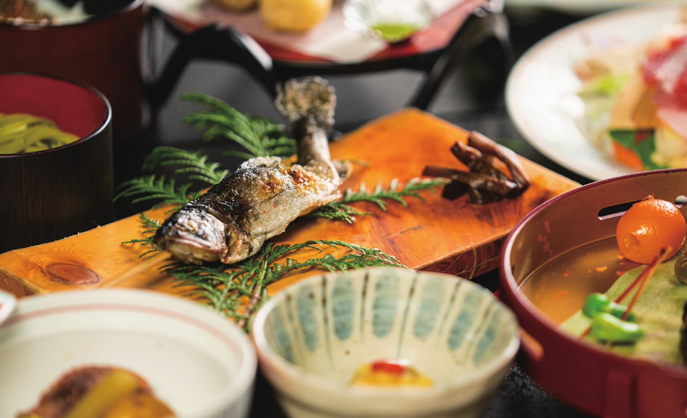
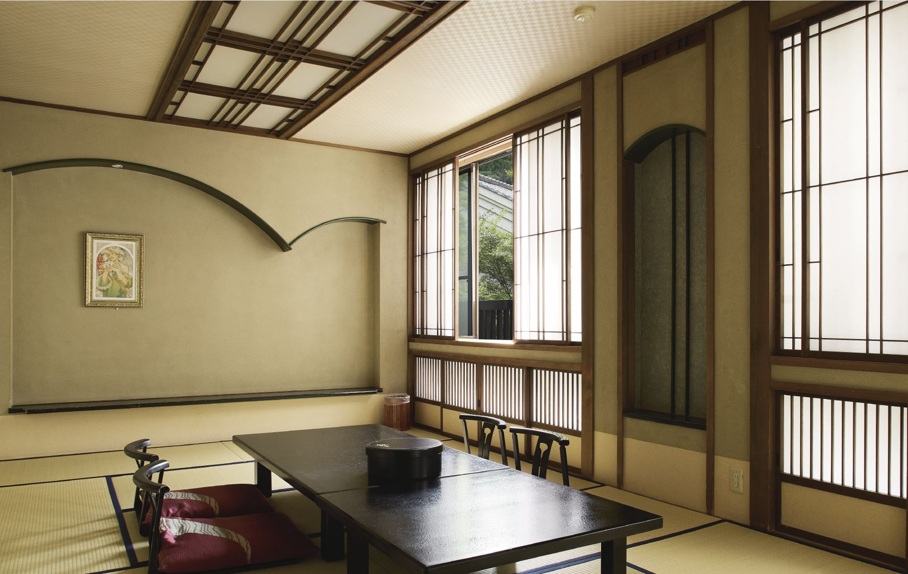
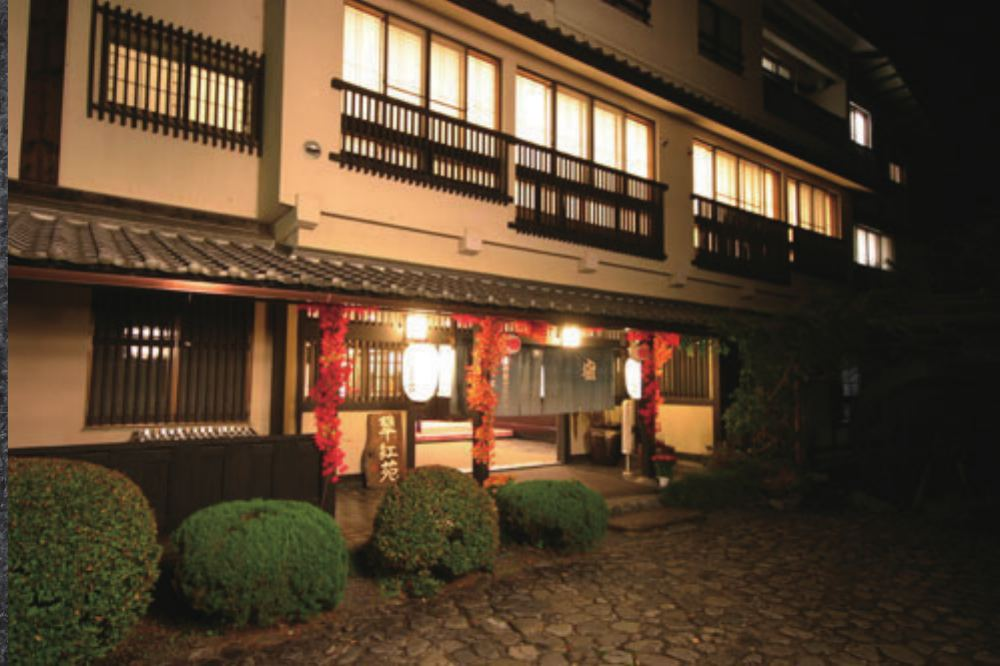

宿から徒歩約15分
夢のつり橋
大間ダム湖に架かる吊り橋。エメラルドグリーンの湖面と
渓谷を一望できる、寸又峡随一の景勝地です。


ベストレート保証
公式サイトが一番お得です
南アルプスの麓、大井川鐵道の終着駅からほど近く。
夢のつり橋を渡れば、目の前にエメラルドグリーンに輝く
ダム湖が広がります。
翠紅苑は、その渓谷美のすぐそばに
昭和三十七年から店を構える一軒宿です。
「美女づくりの湯」と呼ばれるとろりとした温泉と、
地産の食材を活かした和会席料理。
観光で疲れた一日の終わりに、何もしない
贅沢な時間をお過ごしください。
翠紅苑を拠点に、寸又峡の自然と大井川鐵道を楽しむ1日の過ごし方をご提案します。
天気に合わせてお選びください。
宿から徒歩約15分
大間ダム湖に架かる吊り橋。エメラルドグリーンの湖面と
渓谷を一望できる、寸又峡随一の景勝地です。


南アルプスあぷとラインで行く
湖に浮かぶ秘境駅として知られる絶景スポット。
大井川鐵道沿線をめぐるモデルコースの目的地にも。
翠紅苑を拠点に、寸又峡の自然と大井川鐵道を楽しむ1日の過ごし方をご提案します。天気に合わせてお選びください。



昭和37年から続く、懐かしい館内
開業から大切に手入れを続けてきた、レトロで落ち着いた佇まいの館内。
和室を中心に、観光の拠点としても、何もしない静養の場としても
くつろげるお部屋をご用意しています。
